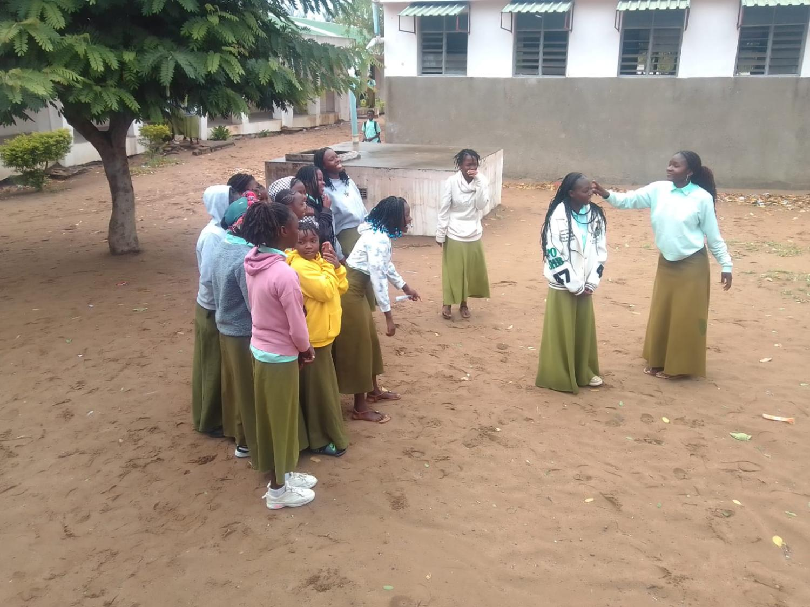

Explicação do tema, causas, consequências e impacto na vida escolar
Segundo a literatura científica e documentos oficiais de educação, o bullying é definido como um comportamento agressivo e intencional, repetido ao longo do tempo, que envolve um desequilíbrio de poder (real ou percebido) entre o agressor e a vítima. Diferencia-se de conflitos ocasionais porque é sistemático e causa sofrimento prolongado.

Actividades de grupo reforçam laços de amizade e solidariedade entre os alunos
O bullying compromete directamente o direito à educação num ambiente seguro. Alunos que sofrem bullying frequentemente faltam às aulas, evitam participar em actividades e apresentam dificuldades de concentração.
Além disso, o fenómeno afecta a coesão do grupo-turma e a autoridade dos professores. Quando a escola não actua de forma clara e consistente, transmite a mensagem de que a agressão é tolerada, o que perpetua o ciclo de violência.